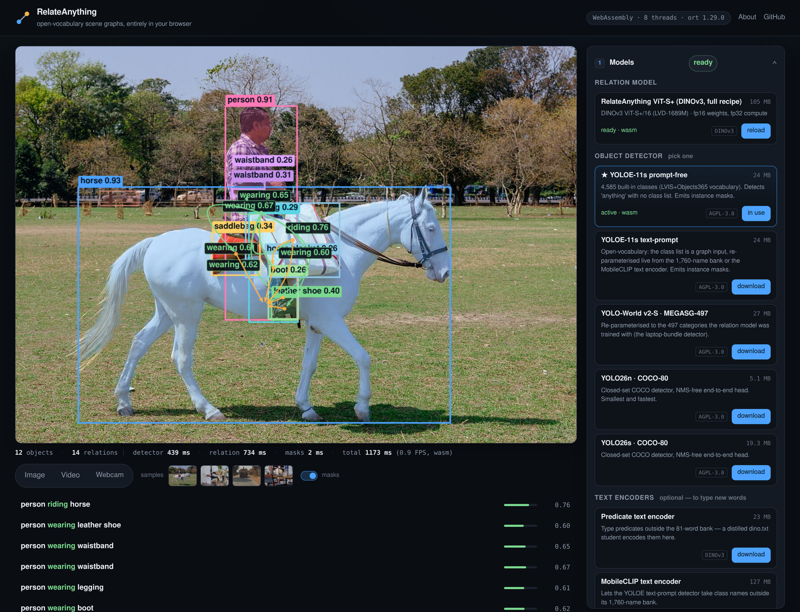

Câmeras enxergam.Agora a IA também entende a cena.
Um modelo aberto, lançado em setembro, descreve o que as pessoas e as coisas estão fazendo numa imagem. Veja como funciona.
COMO É HOJE
A IA de câmera comum só faz uma lista.
pessoa
bicicleta
Ela marca “pessoa” e “bicicleta”, mas não diz se a pessoa está andando, empurrando ou levando a bicicleta embora. Quem interpreta a cena ainda é um humano.
Em vez de uma lista, sai uma descrição: quem faz o quê com quem. Nesta foto, ele achou 12 objetos e 12 relações entre eles.
Resultado real do modelo. Foto: Subhrajyoti07, CC BY-SA 4.0.
O GRANDE DIFERENCIAL
Você diz o que procurar, escrevendo.
RELAÇÕES QUE IMPORTAM NO SEU CASO
“caído no chão”
“sem capacete”
“encostado na porta”
Antes, cada situação nova exigia treinar a IA de novo, com milhares de fotos. Aqui, basta escrever a relação. Ele já aprendeu mais de 19 mil relações diferentes.
LEVE E RÁPIDO
Roda até no navegador.

0 ms
por imagem, com placa de vídeo
0/s
imagens num notebook, sem placa
É pequeno: cabe num computador simples, perto da câmera.
COMPARADO AOS CONCORRENTES
Mais que o triplo da nota no teste da área.
NOTA NO TESTE OV-SGG · MAIOR É MELHOR
RelateAnything0
melhor concorrente aberto0
E é 7,8 vezes mais rápido. Atenção: os números são do próprio autor e ainda não foram confirmados por outros pesquisadores.
NA PRÁTICA, PARA EMPRESAS
A câmera passa a avisar, não só a gravar.
Fábrica e obra
pessoa sem capacete perto da máquina → aviso ao técnico
Condomínio
portão aberto sem ninguém há 2 min → aviso à portaria
Cuidado com idosos
pessoa caída no chão → mensagem para a família
Varejo
cliente olhando a gôndola → quanto tempo cada produto atrai
E A PRIVACIDADE?
A imagem fica. Só o alerta sai.
câmera
mini-PC no local
alerta
O modelo roda num computador dentro da empresa. O vídeo não vai para a nuvem: sai só uma mensagem como “pessoa caída · corredor 2 · 14h32”. Mais privacidade (LGPD) e menos custo.
Quer saber se funciona nas suas câmeras?
A Interas monta um teste no seu ambiente. Comenta aqui ou chama no direct.